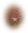
extract-0
Mu / Lo choc mun
03-extracted · 46 × 55 · position 234, 20638 active raster sprites + 38 alpha masks.
Play the makeover · Layer mapping CSV · All generation prompts · Provenance & build notes

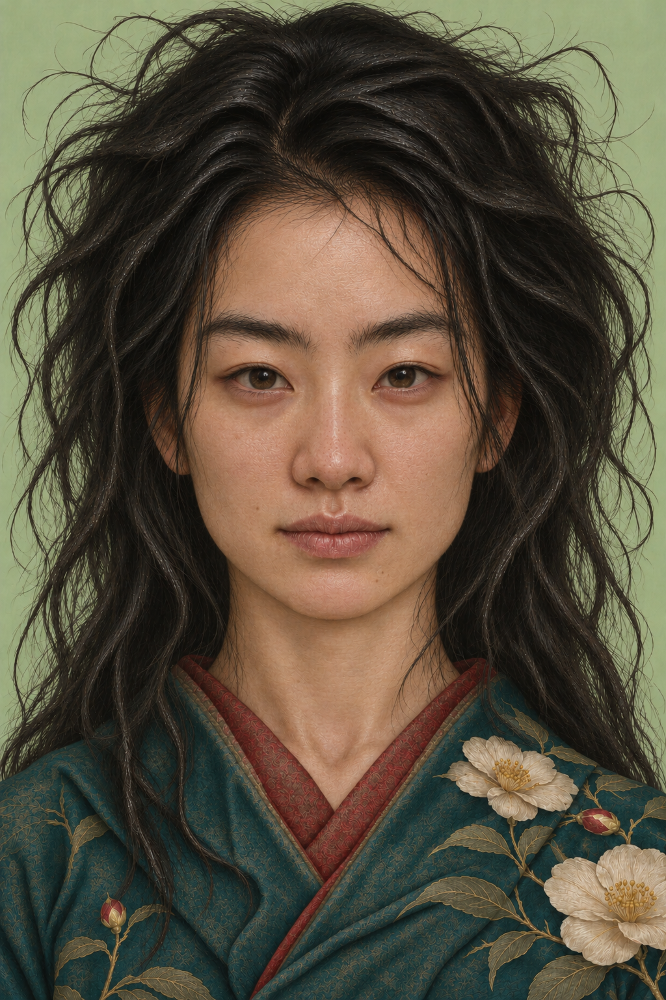
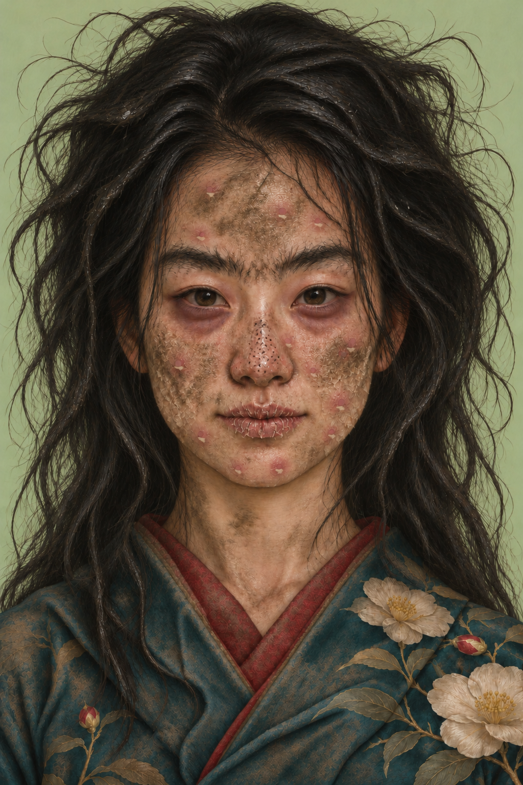
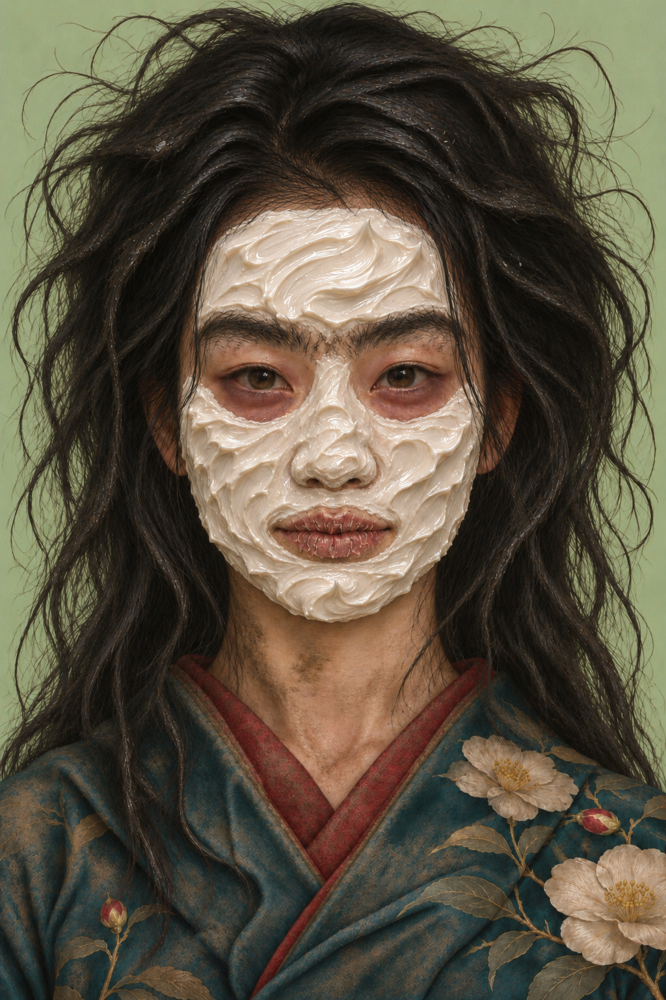
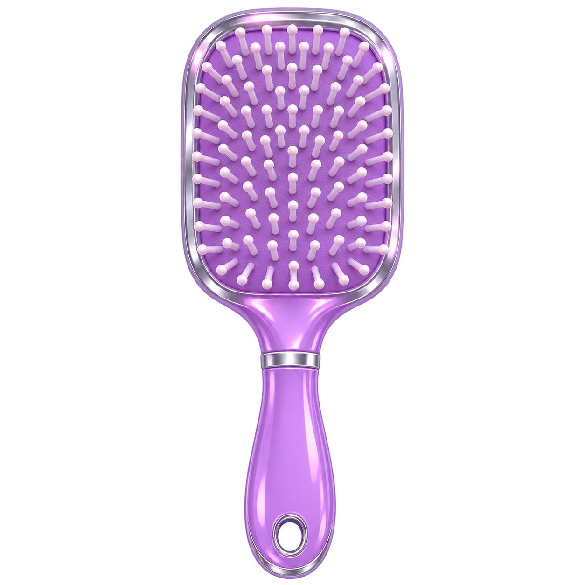
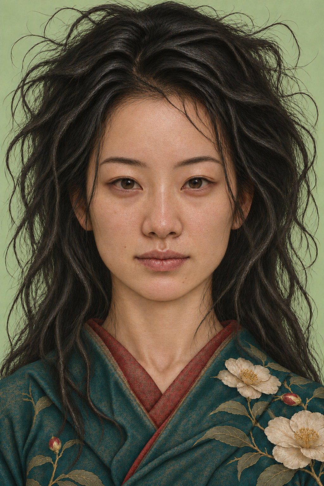
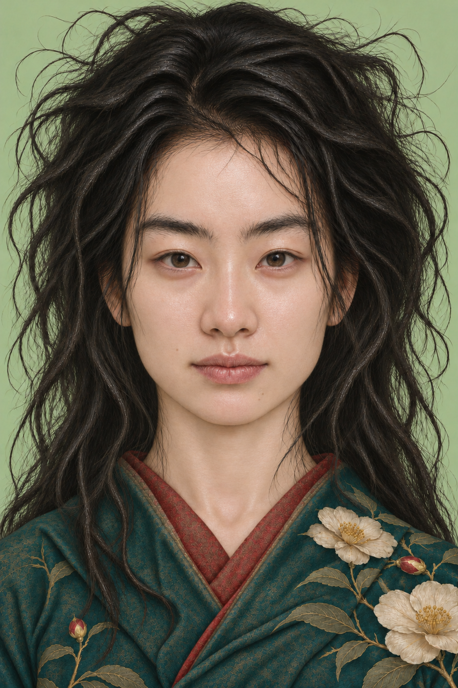
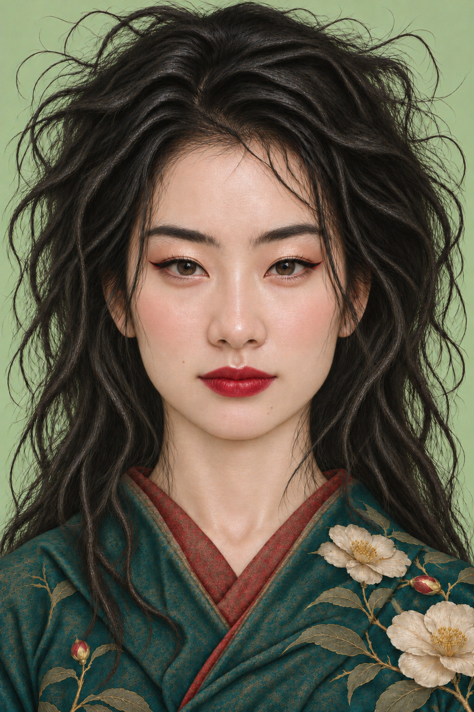
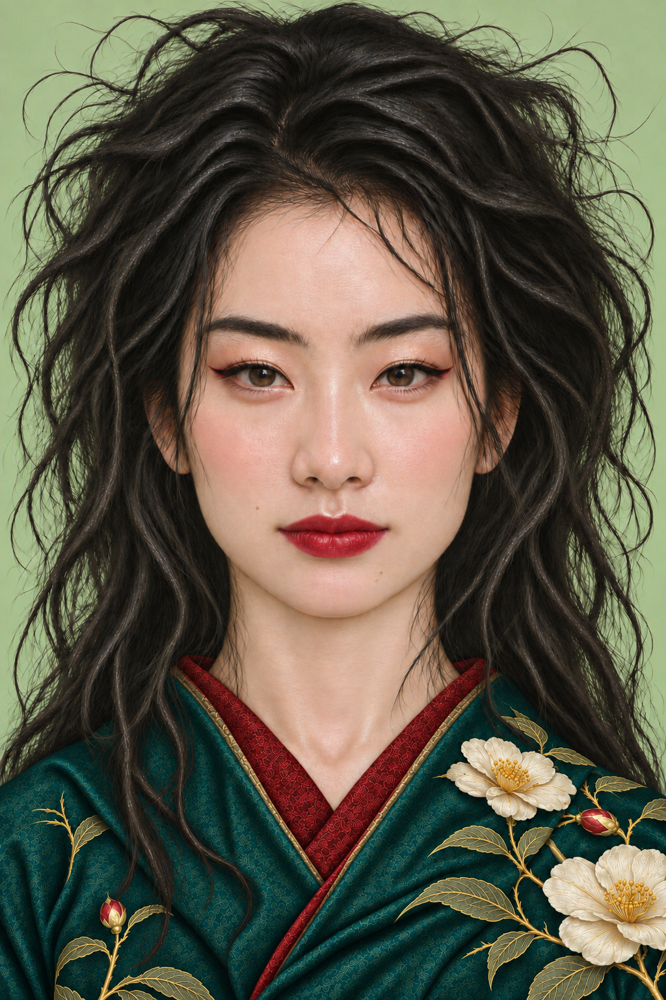
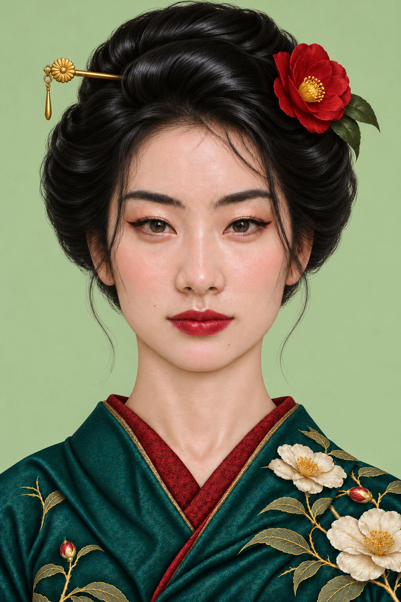
Checkerboard shows transparency. Each PNG retains its original registration through the x/y values in the manifest. Masks contain no visible artwork.

Mu / Lo choc mun
03-extracted · 46 × 55 · position 234, 206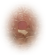
Mu / Lo choc mun
03-extracted · 46 × 55 · position 323, 233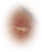
Mu / Lo choc mun
03-extracted · 42 × 52 · position 368, 246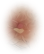
Mu / Lo choc mun
03-extracted · 44 × 54 · position 227, 261Mu / Lo choc mun
03-extracted · 46 × 55 · position 196, 418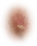
Mu / Lo choc mun
03-extracted · 42 × 52 · position 330, 392Mu / Lo choc mun
03-extracted · 44 × 54 · position 409, 393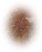
Mu / Lo choc mun
03-extracted · 42 × 52 · position 399, 408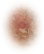
Mu / Lo choc mun
03-extracted · 44 × 54 · position 361, 428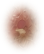
Mu / Lo choc mun
03-extracted · 44 × 54 · position 396, 468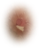
Mu / Lo choc mun
03-extracted · 44 × 54 · position 224, 506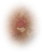
Mu / Lo choc mun
03-extracted · 42 × 52 · position 385, 504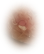
Mu / Lo choc mun
03-extracted · 44 × 54 · position 269, 549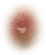
Mu / Lo choc mun
03-extracted · 46 × 55 · position 320, 546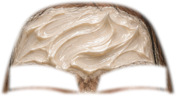
Kem / Kem_1 / Vet kem duong
04-cream · 296 × 163 · position 172, 189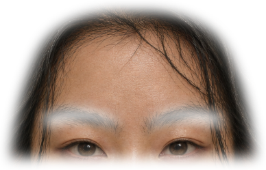
Base khuyet diem / Base_Mun / Base_Tan nhang
01-clean · 388 × 249 · position 126, 145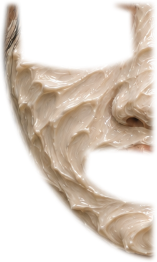
Kem / Kem_1 / Vet kem duong
04-cream · 157 × 262 · position 168, 342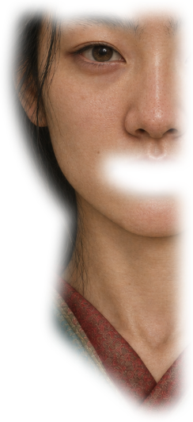
Base khuyet diem / Base_Mun / Base_Tan nhang
01-clean · 244 × 532 · position 123, 296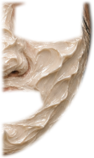
Kem / Kem_1 / Vet kem duong
04-cream · 157 × 262 · position 315, 342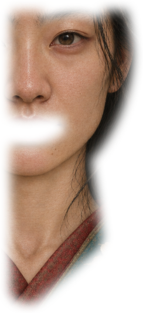
Base khuyet diem / Base_Mun / Base_Tan nhang
01-clean · 244 × 532 · position 273, 296Base_Long may truoc khi sua
12-groomed-brows · 133 × 61 · position 180, 291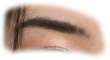
Long may dam
14-glamour-hair-down · 158 × 86 · position 168, 279Base_Long may truoc khi sua
12-groomed-brows · 133 × 61 · position 327, 291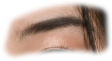
Long may dam
14-glamour-hair-down · 158 × 86 · position 314, 279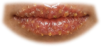
Lop bot tay da chet
05-lip-scrub · 144 × 67 · position 248, 486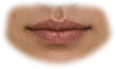
Moi tham nuoc / Base_Moi chua duong
01-clean · 196 × 117 · position 222, 461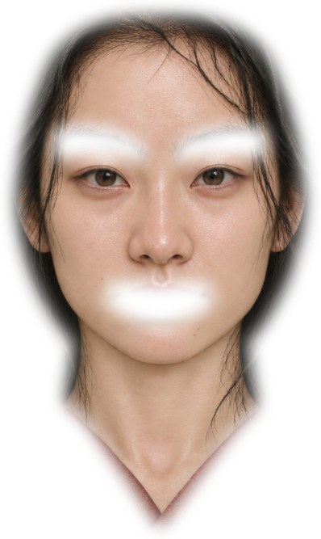
Face_danh phan
13-foundation-hair-down · 398 × 667 · position 121, 143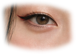
Phan mat / Phan duoi mat / Lop kim tuyen / mascara (combined)
14-glamour-hair-down · 154 × 110 · position 166, 321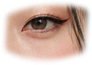
Phan mat / Phan duoi mat / Lop kim tuyen / mascara (combined)
14-glamour-hair-down · 154 × 110 · position 320, 321Khoi mui
14-glamour-hair-down · 54 × 102 · position 271, 380Khoi mui
14-glamour-hair-down · 54 × 102 · position 315, 380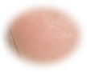
Ma hong
14-glamour-hair-down · 108 × 90 · position 175, 389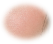
Ma hong
14-glamour-hair-down · 108 × 90 · position 357, 389Son moi
14-glamour-hair-down · 153 × 76 · position 243, 481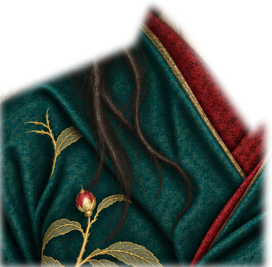
Original robe cleanup
15-clean-robe · 344 × 337 · position 0, 623Original robe cleanup
15-clean-robe · 344 × 332 · position 296, 628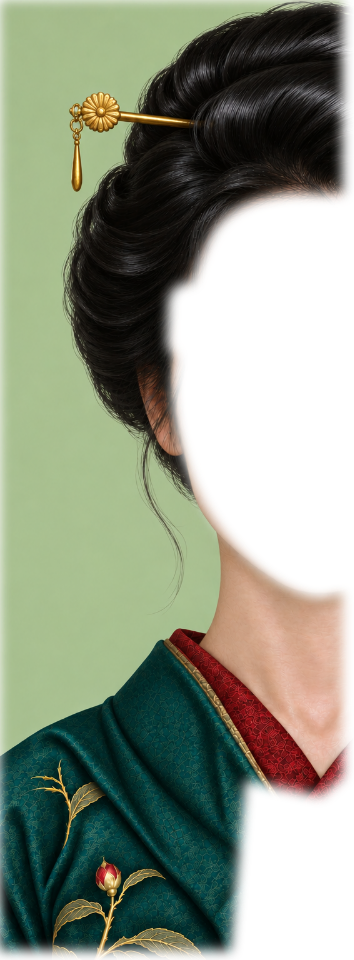
Hair-only styling
16-hair-only · 354 × 960 · position 0, 0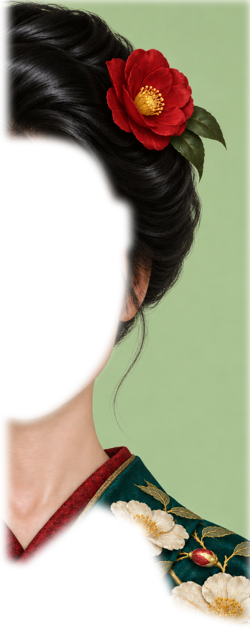
Hair-only styling
16-hair-only · 354 × 890 · position 286, 0